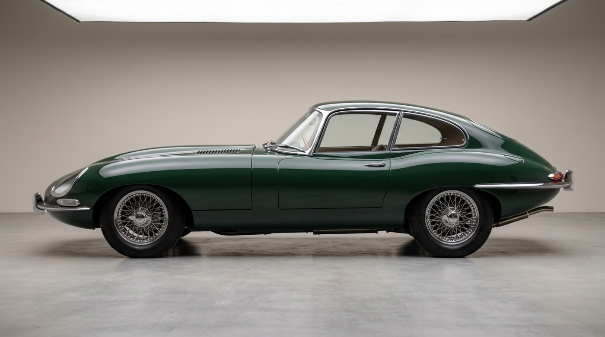
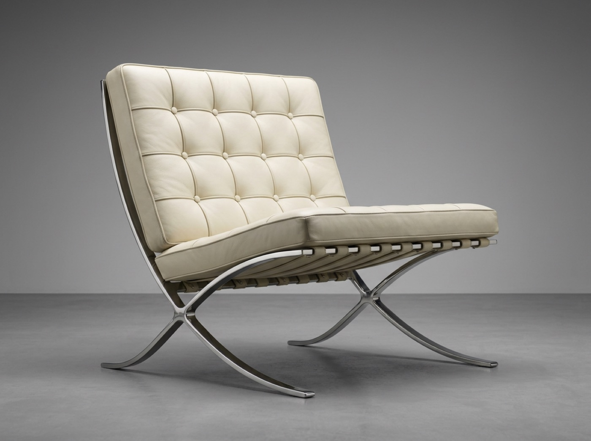
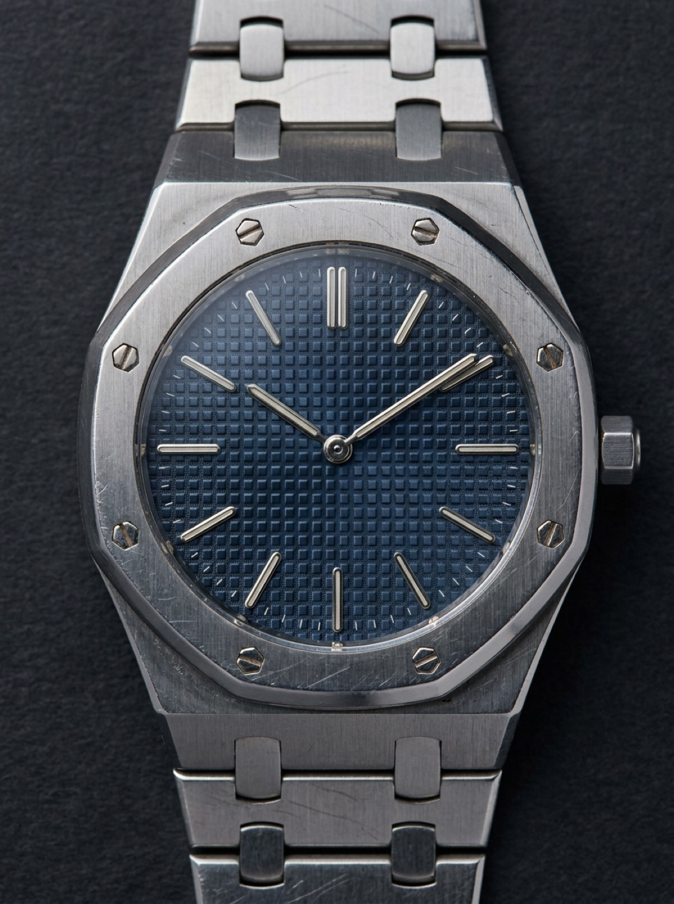
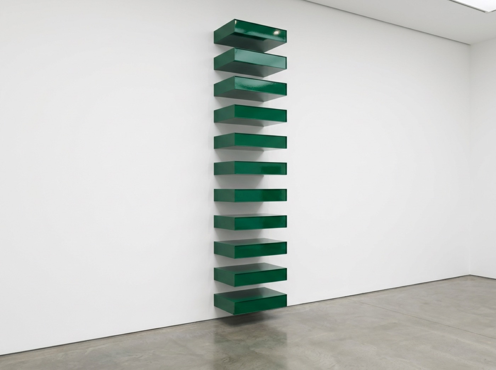
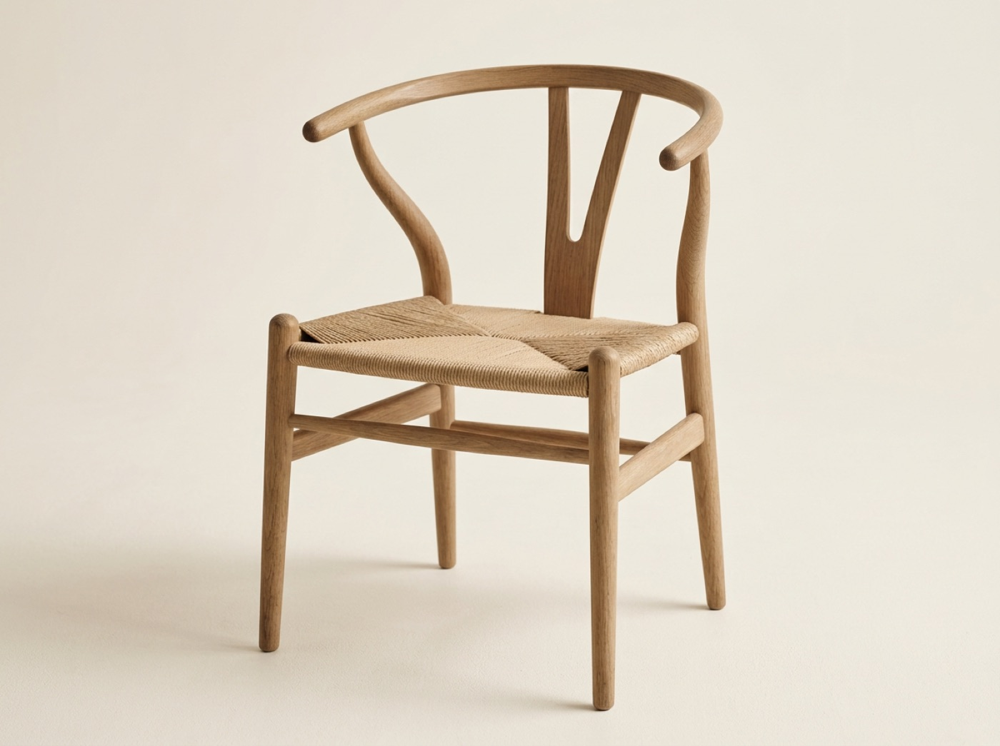

Commit to one ratio
An aerodynamicist, Malcolm Sayer plotted the E-Type's curves mathematically rather than sculpting them by eye. The bonnet takes nearly half the car's length and the body stands 1.2 meters tall. One ratio is exaggerated, and every other element defers to it.

Measure the bonnet against the whole: nearly half the length, headlamps faired under glass so nothing interrupts the volume from nose to windscreen.
One module, every dimension
Leonardo's sheet encodes Vitruvius: height equals arm span, a 1:1 module; the head is one-eighth of height; the navel centers the circle while the groin centers the square. Every part is a fraction of one unit.
Height equals arm span, so the figure fills the square exactly; the navel centers the circle, the groin centers the square, the head is one-eighth of height.
Palladio ran the same logic at building scale: rooms follow the whole-number ratios he published in the Quattro Libri, four identical porticos on a square plan, every view self-evident.
Four identical six-column porticos on a square plan, rotated 45 degrees off the compass so every room receives sun. 450 years of imitation followed.
Proportion before material
Read both with the material switched off. The chair is stance: low, wide, nearly square. The watch is 39 mm across and 7 mm thick, sold in steel above the price of contemporary gold watches. Proportion carried the price.

Each cushion is 40 hand-welted leather panels on 17 straps, yet the chair reads first as stance: low, wide, near-square, one polished X-curve per side.

Octagonal bezel, eight exposed hexagonal screws, a 154-component bracelet with no lug break: exposed construction plus a thin profile as the entire ornament.
The gap is a component
Twelve galvanized-iron boxes, each 9 by 40 by 31 inches, hung at intervals of exactly 9 inches: the gap equals the unit. Judd decided the spacing once and let industrial fabrication carry it out. A spacing-token system, built in iron, in 1967.

A strict 1:1 solid-to-void ratio, floor to ceiling; the green is off-the-shelf Harley-Davidson lacquer, the iron industrially fabricated, not hand-finished.
A keypad crosses thirty years
Proportion systems are inheritable. The 2007 iPhone Calculator copies the Braun ET44 keypad of 1977 almost cell for cell: a strict four-column grid, equal gutters, operators isolated in one orange column so function reads by hue and position before any symbol.
iPhone Calculator · 2007. It computes. Press any key: the convex gradient flattens, and that flattening is the entire pressed state. Typeface approximated with system-ui (original: Helvetica). Built live in CSS — inspect it.
Controls that announce themselves
Don Norman split the idea in two: an affordance is what is possible, a signifier is what is perceivable. Watch software find its signifiers, compress them into one gesture, then lose and recover them.
Do you want to save changes to this document before closing?
Mac OS X Aqua · 2000. Gel depth from gradients and shadows alone; close/minimize/zoom encoded by both color and fixed position; the default button pulses to claim the primary action. Jobs: buttons "you'll want to lick." Lucida Grande approximated with system-ui. Built live in CSS — inspect it.
Three signifiers in one widget: a recessed groove says something travels here, a raised knob says grab me, an embossed arrow says that way. The sheen on the label animates the gesture's direction.
Slide to Unlock · 2007. Drag the knob; release early and it springs back. The track is carved in by inner shadow, the knob raised by gradient. Arrow keys work too. Patent filed December 2005. Label in system-ui (original: Helvetica). Built live in CSS — inspect it.
iOS 7 flattened those cues away in 2013; Norman and Nielsen objected in print. Material Design answered a year later with one honest physical cue: a consistent light source casting codified shadows, 1dp to 24dp, on an 8dp grid.
Paper has physics
Every surface is a sheet at a quantized elevation. The light never moves, so shadow alone encodes depth.
Material Design · 2014. Toggle the 8dp grid. Three elevations must read from shadow alone: card at 2dp, raised button at 4dp, floating action button at 6dp. Roboto approximated with system-ui. Built live in CSS — inspect it.
Affordance without a screen
None of this began on screens. Ferrari's open gate makes the transmission's entire state space visible before you touch the lever, with a metallic detent as confirmation. The trench coat survives because every component announces a job; nothing is ornament, so nothing dates.
One milled slot per gear: the whole state space visible at a glance, every engagement landing in a physical detent. Zero labels.
Storm flap sheds water, gun flap covers an opening, D-rings carried equipment, sleeve straps seal out rain. Nothing ornamental, so the template has held for a century.
Structure becomes signature
Wegner fused backrest and armrest into one steam-bent hoop, then added the Y-shaped splat purely to brace it. The signature element is structure doing its job in public. In continuous production since 1950.

The wishbone exists to brace the hoop; the seat is about 120 meters of paper cord, hand-woven in roughly an hour, across 100-plus production steps.
Proportion makes a control beautiful; a signifier makes it announce itself before it is ever touched.
In your systems
Neo-tactile is this chapter run in reverse: skeuomorphic shading revived a decade after flat design erased it. Its entire affordance budget is 2 to 3 px of emboss travel on cream paper, the same physics as Aqua's gel, only quieter. Hold it to the calculator's standard: pressed must read from the deboss alone, no color change. Proportion is the harder audit. Are calm-ink's type steps and racing-green's panel widths derived from one module, or chosen by eye? Pick neo-tactile's weakest control and ask: with the label hidden, does the relief still say press me?
Screenshot one screen from each of two systems (e-ink and spatial-glass, say) and hide all text via devtools (color: transparent). List which controls still read as pressable and what is doing the announcing — shadow, radius, contrast, position. Then add one signifier to the weakest control.
Vocabulary
- Affordance vs signifier — what is possible vs what is perceivable. Don Norman, The Design of Everyday Things, 1988; signifiers named in the 2013 revised edition.
- Understandable — good design makes a product understandable. Dieter Rams, principle 4, via Vitsoe.
- Proportion canons — golden section, root rectangles, page shapes derived from ratios. Robert Bringhurst, "Shaping the Page," 1992; Le Corbusier, Le Modulor, 1948.
- Flat design's lost signifiers — the skeuomorphic-to-flat pendulum. Don Norman & Jakob Nielsen, NN/g critique of flat UI, 2013.
- Depth as material cue — shadow, radius, and relief as honest physics across systems; neo-tactile is this idea, revived.
Sources: Norman, The Design of Everyday Things (1988; rev. 2013); Rams, Ten Principles of Good Design (Vitsoe); Bringhurst, The Elements of Typographic Style (1992); Le Corbusier, Le Modulor (1948); Norman & Nielsen, NN/g (2013); Google Material Design announcement, I/O (2014).